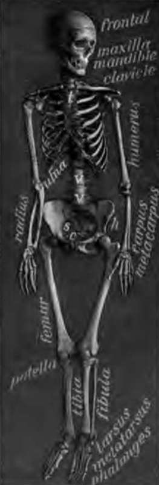
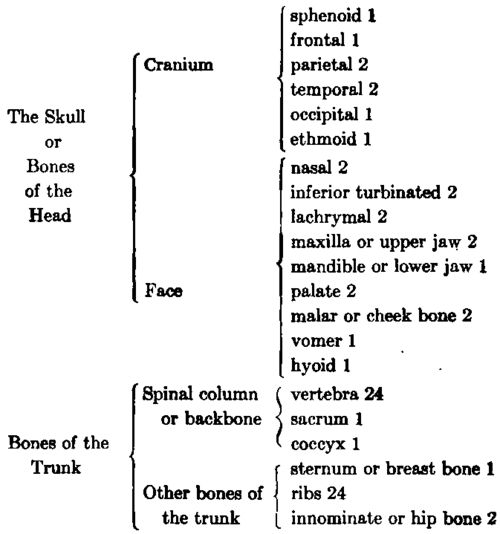
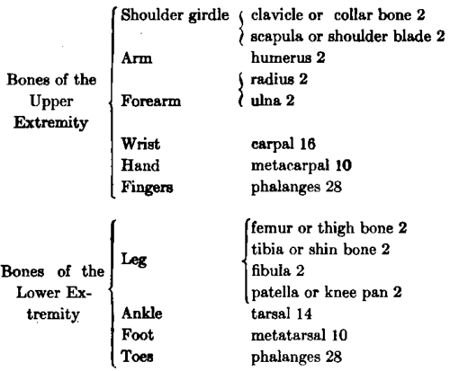
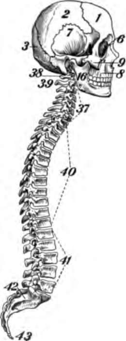
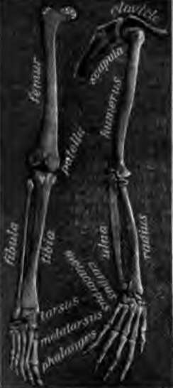
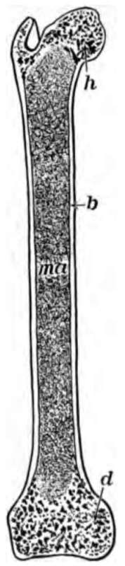
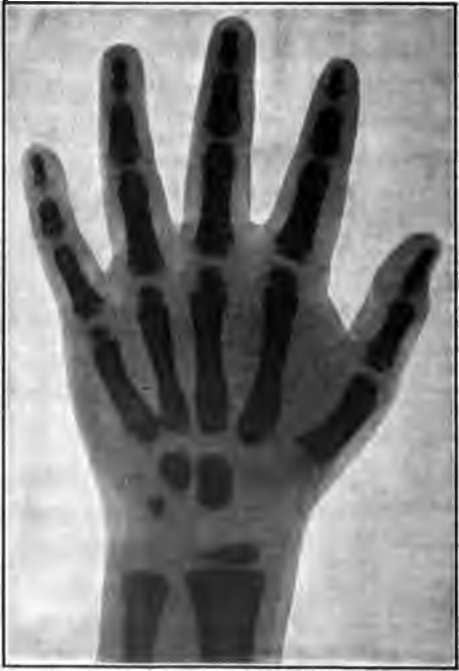

Chapter XIV. The Bones
Description
This section is from the book "The Human Body And Health", by Alvin Davison. Also available from Amazon: The Human Body and Health.
Chapter XIV. The Bones
Use Of The Bones
The bones of the body are used for support, and also to help ove. The muscles which aade to act by the nerves, on the bones so as to them in any direction may wish. The bones 1 from outward injury the rtant organs such as the , spinal cord, lungs and . All of the red blood iscles, and many of the ones, are made in the one marrow which fills lany small spaces in the e of the bones, angement of the Bones are over two hundred in the body. These, together in their natural ons, form the bony frame-called the skeleton. The of the skeleton are the or bones of the head, unk, and the extremities.
Fig. 90. The skeleton, t, breastbone; v, vertebrae; h, hip bone. From a photograph.
As the bones in the skeleton of a dog or cat have about the same form and relations as those of man, the bones of these animals often found in the woods or fields may be used for study.
Bones Of The Head
The skull, formed by the bones of the head, is at birth quite incomplete on the sides and top. In these places there are spaces where only membrane separates the brain from the skin. These spaces are not entirely closed with bone until the end of the second year. It is possible, therefore, to cause the death of a baby by a slight stroke on the head.
The Bones of the Skeleton.
There are twenty-two bones in the skull, in addition to the six tiny bones of the ears. The eight bones surrounding the brain form the cranium, while the other fourteen make up the face. The bony brain case is a quarter-inch thick.
The Bones Of The Trunk
The trunk is made of the spinal column, the ribs, the breastbone and the hip bones. These are so arranged as to protect well the internal organs. The spinal column or backbone is made of a chain of twenty-six bones. A canal extends from the top to the bottom of the backbone. This is nearly filled by the spinal cord.
There are twelve pairs of ribs. Seven pairs called the true ribs are joined to the backbone, and also to the breastbone in front. The five lower pairs of ribs are known as false ribs because they are not joined direct to the breastbone.
Fig. 91. Side view of skull and spinal column 1, frontal; 2, parietal; 7, temporal. Note the separate bones of the backbone.
Fig. 92. Bones of the leg at the left, and those of the arm at the right.
The two outward flaring hip bones with the sacrum between them form a basin called the pelvis.
Bones Of The Extremities
The bones of the upper extremity are of similar shape and arrangement to those of the lower extremity, with the exception of the flat shoulder blade or scapula on the back, and the collar bone or clavicle in front of the shoulder. A single bone, the humerus reaching from the shoulder to the elbow, forms the arm, while two bones, the ulna and radius, reaching from the elbow to the wrist, make up the forearm. The femur or thigh bone extends from the hip to the knee, and a strong bone, the tibia or shin bone, with a slender bone, the i, reaches from the knee to the ankle. The wrist s, called carpus, are eight in number, while there are l bones named tarsus forming the ankle. A single of the wrist is called a carpal, and of the ankle bones is a tarsal. ve bones are present in the palm of land, and the same number of bones n the same part of the foot. There hree bones in each finger, and two e thumb. There are also three bones jnt in each toe, except the great one h has only two.
Fig. 93. The thigh bone cut through the middle, b, hard bone; h and d, spongy bone; ma, marrow.
Ructure Of Bone
Bone is made hard sdts of lime, but there are many soft g cells in the bone. By placing a , such as a rib of any animal, in ig vinegar or other weak acid, the salts may be eaten out. Within a : the bone will become as elastic as 3en willow twig unerous channels extend through ones for the purpose of lodging the bs and blood vessels. The surface 5nes is made of hard compact bone, 5 within is loose spongy bone. The ends le long bones are nearly all spongy , while in the middle part is a cavity with soft white marrow. This gives aess and much surface for the hment of muscles.
Fig. 94. Tie bones in the hand of a child of five years. Only three of the eight wrist bones are formed and loose ends arc seen on other bones. From an X-ray photograph.
Every bone is covered on the outside with a tough membrane called periosteum. This serves for the attachment of the ends of muscles. It is also able to grow new bone to take the place of that which may be destroyed.
How The Bones Grow
Most of the bones are at first in the form of a gristle called cartilage. This may be easily bent and pressed out of shape. In the young child, since much of the cartilage is not yet changed into bone, the legs may become bent or bowed if it is allowed to stand too much. Even children of school age sometimes make the bones grow into a bad shape by sitting on seats so high that the feet cannot touch the floor, or by leaning over the desk so as to cause round shoulders. Everyone should form the habit of sitting up straight, of keeping the shoulders held back in walking and theneck pressed back against the collar.
Continue to: